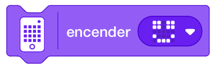

Los bloques de luz son la tercera categoría en la paleta de bloques y tienen un código de color azul claro.
Estos bloques son responsables de controlar la matriz de luz, el color del botón central y la luz del sensor
de distancia.
En la categoría de bloques de luz hay un total de 10 bloques de pila.
Este bloque activa los píxeles elegidos en la matriz de luz 5x5 en el brillo elegido durante el tiempo
definido.
Utiliza el creador de matrices para seleccionar los píxeles que deseas activar y utiliza el control
deslizante para ajustar el brillo de cada píxel.
En segundos, escribiremos durante cuánto tiempo debe aparecer la forma creada en la matriz de luz 5x5.
Este bloque activa los píxeles elegidos en la matriz de luz 5x5 en el brillo elegido.
Utiliza el creador de matrices para seleccionar los píxeles que deseas activar y utiliza el control
deslizante para ajustar el brillo de cada píxel.

Este bloque muestra el texto introducido en la matriz 5x5 del hub de Spike.
El texto introducido aparecerá de letra en letra y la palabra seguiría de izquierda a derecha.
Este bloque desactiva todos los píxeles activados en la matriz LED 5×5.
El bloque de píxeles de desactivación se agrega después de activar los píxeles en la matriz durante un
tiempo indefinido.
Este bloque establece el brillo de los píxeles para el siguiente bloque de luz al nivel definido (0-100)% .
El bloque de brillo de píxeles establecido se agrega antes de los bloques sin un nivel de brillo definido.

Este bloque establece el brillo de un píxel individual en la matriz 5x5 para el nivel de brillo definido (0-100)%.
Este bloque gira la orientación del texto o la forma que se muestra en la matriz de luz en sentido horario o en el sentido antihorario.
Este bloque establece la orientación del texto o la forma que se muestra en la matriz de luz en vertical, izquierda, derecha o boca abajo.
Este bloque establece el color del LED en el botón central del hub de Spike.
Puedes elegir entre 11 colores: negro, violeta, azul, azul claro, púrpura, verde claro, verde, amarillo,
naranja, rojo y blanco.
Este bloque enciende/apague los LED que rodean el sensor de distancia de Spike Prime.